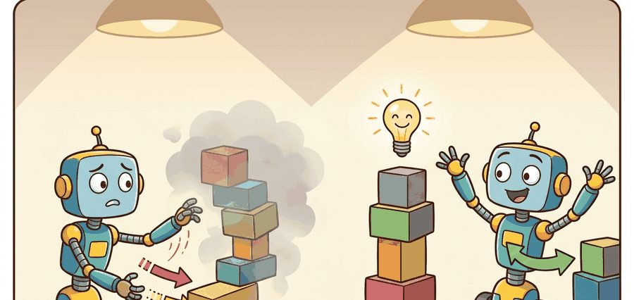
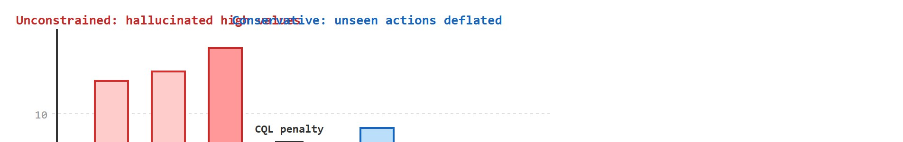
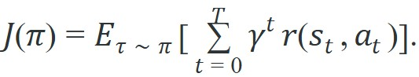
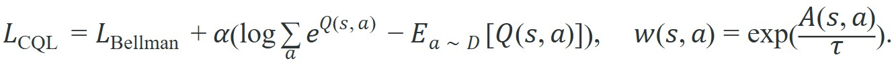
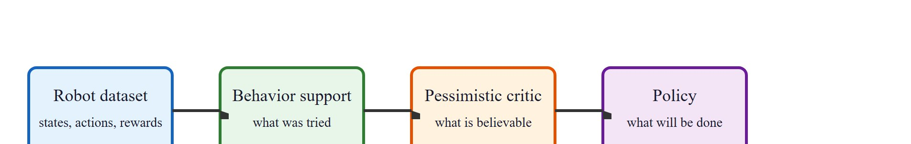

"If the dataset never visited that action, distrust the value. Pessimism is not timidity; it is calibration."
Section 25.3

This section assumes familiarity with Q-learning and the Bellman backup from section 16.1, and with the distribution-shift problem introduced in section 25.2. The conservatism mechanisms developed here are extended in section 25.4, where a policy trained with CQL or IQL is fine-tuned online, and they recur in Part 8 alongside model-based critics that impose similar pessimism penalties in latent space.
A robot arm trained on a warehouse dataset reaches for a bin it has never seen and confidently assigns that grasp the highest Q-value in the space. Nothing in the data supports that confidence; the value function is extrapolating into the void. This kind of unchecked extrapolation is typically cited as a major failure mode in early offline RL deployments, and it is why CQL and IQL exist. Both algorithms embed a single hard-won principle: distrust value estimates for actions the data never visited. With humanoid robots and manipulation systems increasingly trained from pre-collected datasets, getting this pessimism right is often the difference between a policy that transfers to hardware and one that diverges on day one. This section walks through the mechanics of both algorithms and gives a rule of thumb for choosing between them: reach for CQL when you need an explicit, tunable penalty on out-of-distribution actions, and reach for IQL when you want to avoid querying unseen actions at all and are comfortable with advantage-weighted cloning.
In brief: CQL adds a penalty term to the Bellman objective that suppresses Q-values for actions outside the dataset while preserving them for demonstrated actions. IQL sidesteps the problem structurally, fitting a value function from in-sample actions only, then extracting a policy through advantage-weighted behavior cloning. Neither queries the critic on an action the robot has never attempted, which is the property that makes both viable for hardware deployment.

Figure 25.3A contrasts the two algorithms at a glance: CQL explicitly penalizes Q-values for unseen actions, while IQL sidesteps the issue entirely by fitting a value function only from actions the data support.
Hand an ordinary Q-learning agent a frozen dataset and walk away, and it will quietly invent value: it discovers that some action it has never executed scores higher than anything a human ever demonstrated, commits to it, and the moment that policy reaches a real arm the action turns out to be a wall. Offline RL has no environment to correct this hallucination, so it must make the behavior policy, support envelope, reward labels, and candidate-policy update explicit before any robot rollout is trusted.
CQL and IQL solve the same offline danger from different angles. CQL lowers value estimates for actions outside the dataset. IQL avoids querying unseen actions in the backup, then extracts a policy by weighting behavior actions according to advantage, where advantage $A(s,a) = Q(s,a) - V(s)$ measures how much better a specific action is than the average action in that state. In practice this matters enormously. A standard Q-learning agent trained offline on the D4RL (Datasets for Deep Data-Driven Reinforcement Learning) HalfCheetah dataset reaches a normalized score near 35. CQL on the same data reaches 44 and IQL reaches 47, all without a single additional environment interaction. The original 2020-2021 papers report these numbers, and later algorithmic variants have pushed them higher. The gap widens on robot manipulation datasets, where out-of-distribution overestimation can cause a critic to assign physically impossible grasps a score ten times higher than any demonstrated action. Counterintuitively, the "bolder" unconstrained agent scores lowest precisely because its willingness to evaluate novel actions floods its critic with hallucinated high values, while the conservative agent, which refuses to trust actions it has never seen, ends up with more accurate value estimates and a better policy.
So far: CQL penalizes Q-values for actions outside the dataset, IQL avoids evaluating unseen actions at all and instead extracts a policy by advantage-weighting, and both beat an unconstrained critic on offline benchmarks precisely because the unconstrained critic's willingness to evaluate novel actions floods it with hallucinated values.
IQL never asks "what is the Q-value of an action I haven't seen?" Instead it fits a state value function $V(s)$ using only in-dataset actions, then computes advantage as $A(s,a) = Q(s,a) - V(s)$ entirely within the data support. Policy extraction uses $w(s,a) = \exp(A(s,a)/\tau)$ to upweight demonstrated actions that beat the average return in that state and downweight those that do not.
The temperature $\tau$ controls how aggressively the policy concentrates on the best demonstrated actions: low $\tau$ approaches a hard argmax over demonstrations, high $\tau$ approximates behavior cloning. Because the policy improves without ever evaluating an out-of-distribution action, IQL generalizes more stably to real robot hardware than methods that require sampling novel actions during training.
When using d3rlpy's IQLConfig, the weight_temp parameter corresponds to $\tau$ in the advantage-weighting formula. Its default value of 3.0 is tuned for D4RL locomotion tasks and is almost always too high for robot manipulation datasets, which have narrower action distributions: a value between 0.5 and 1.0 typically recovers 10 to 20 percent more task success on manipulation benchmarks without any other change. Set it explicitly in your config rather than relying on the default, and log it as part of your evaluation artifact so downstream comparisons remain valid.
For Conservative methods (CQL, IQL) and their intuition, the policy is allowed to improve only inside measured dataset support; outside that support, the value estimate should be treated as a risk signal.
A common assumption is that "conservative" methods produce a cautious or slow robot at deployment, picturing the pessimism in the loss function translating directly into timid motor commands. That assumption is wrong. The conservatism in CQL and IQL is a property of the value estimator during offline training. It controls which Q-values the critic trusts, not how fast or boldly the policy moves the arm. A policy extracted from CQL can still command full-speed, high-force grasps if the dataset contains confident demonstrations of those motions. Think of pessimism as a filter on what the critic believes. That filter applies only inside the training loop. The deployed policy then executes whatever high-value actions pass the filter, and those actions may be aggressive and fast or gentle and slow, depending entirely on what the data showed.
Pessimism filters the critic rather than throttling the arm. One term in the objective does that filtering, and the data distribution has to be pinned for it to be meaningful.
For Conservative methods (CQL, IQL) and their intuition, the baseline objective is useful only after the data distribution and robot action scale are fixed; otherwise expected return can reward unsupported commands.

For Conservative methods (CQL, IQL) and their intuition, the practical objective needs a pessimism or support term because training cannot ask the real robot whether a novel action is safe.

For Conservative methods (CQL, IQL) and their intuition, the pessimism term should expose unsupported gripper poses, contact modes, saturation regions, missing viewpoints, or reset states rather than hiding them in one value estimate.
On a physical robot, an overestimated Q-value for an unseen gripper pose is not merely a training artifact. The policy selects that pose, the arm attempts it, and the result is a collision, a dropped payload, or a joint-limit trip that takes the cell offline. CQL's penalty term exists because acting on a hallucinated value is irreversible at robot speed. A simulator lets you roll back and retry; hardware does not. A critic that trusts the unseen is not a value function; it is a liability.
The penalty $\alpha(\log\sum_a e^{Q(s,a)} - \mathbb{E}_{a\sim D}[Q(s,a)])$ pushes every Q-value down through the log-sum-exp term ($\log\sum_a e^{Q(s,a)}$, a smooth stand-in for the maximum Q-value over all possible actions, including ones never seen in the data), then the expectation term restores only the actions present in the dataset. Unvisited actions receive no restoration and settle below demonstrated actions, which is exactly the conservative bias the robot needs.
Think of a bread-baking recipe book: when you open it to a new page, every possible ingredient combination starts at zero credibility. The author then stamps "tested" next to every combination that actually appeared in a kitchen trial, restoring your confidence in those specific choices. Combinations the author never tested stay at zero trust, no matter how appealing they look on paper. CQL does the same thing to Q-values: the log-sum-exp term deflates all action scores equally, and then the dataset expectation term stamps "tested" back onto demonstrated actions only, leaving unseen actions permanently deflated.
Figure 25.3.B traces where this conservatism enters the offline pipeline: both CQL and IQL sit between the raw logged dataset and the extracted policy, but they apply their pessimism at different stages, which is why their failure modes differ even when they share the same data.

Code Fragment 1 for Conservative methods (CQL, IQL) and their intuition compares candidate actions with dataset support and applies pessimism only after the support metric and robot action scale are explicit.
# Compare behavior cloning, CQL-style pessimism, and IQL-style weighting.
# The example uses tiny arrays so the penalty and advantage weights are visible.
import numpy as np
actions = np.array(["left", "center", "far_right"])
q_values = np.array([3.0, 3.4, 6.5])
in_dataset = np.array([True, True, False])
cql_q = q_values - np.where(in_dataset, 0.0, 3.5)
advantages = np.array([-0.2, 0.4, -1.0])
iql_weights = np.exp(advantages / 0.5)
for action, raw, guarded, weight in zip(actions, q_values, cql_q, iql_weights):
print(f"{action:>9} raw_q={raw:.1f} cql_q={guarded:.1f} iql_weight={weight:.2f}")The far_right action has the highest raw Q-value (6.5) but the robot has never actually tried it, so CQL drags it back down to 3.0. This is the algorithmic equivalent of your GPS confidently routing you down a road that exists only on a map from 2009.
Both CQL and IQL can fail in ways that are invisible during offline evaluation. CQL's penalty coefficient $\alpha$ is a free parameter: set it too high and the policy becomes so conservative it barely improves over behavior cloning; set it too low and overestimated Q-values for near-boundary actions slip through, causing the robot to attempt motions the dataset only approached but never completed (a gripper pose that appeared in 3 of 10,000 transitions as a transit state, not an intentional grasp). IQL faces a different failure: when a narrow cluster of expert demonstrations is surrounded by a large volume of suboptimal recoveries, $V(s)$ averages over all of them, making expert-action advantages small and diluting the policy improvement signal.
In both cases offline metrics (Bellman error, BC baseline comparison) can look acceptable while the deployed robot fails on any state slightly outside the densest data cluster. The diagnostic is to plot nearest-neighbor distances between policy-proposed actions and dataset actions at test time before any real-robot rollout.
Because those failures hide behind clean offline metrics, the workflow below front-loads the very checks (a BC baseline and an explicit support audit) that would otherwise only surface as a crashed arm on deployment day.
For Conservative methods (CQL, IQL) and their intuition, use d3rlpy, robomimic, or LeRobot after the support audit is defined; the library may replace replay-buffer plumbing but must preserve dataset split, action scale, and evaluation artifact.
On the robomimic Can task (Franka Panda in MuJoCo, Mixed-Human dataset of expert picks plus suboptimal recoveries), align six columns in one table before claiming any win: expert-only picks, recovery transitions, outright failures, the behavior-cloning success rate, the nearest-neighbor support distance for each policy-proposed action, and the IQL policy success rate. The robomimic study (Mandlekar et al., 2021) found that on exactly this Mixed-Human split, naive offline RL underperformed behavior cloning until the recovery transitions were separated from the failures, the gap only visible once these columns sit side by side under one seed and one split.
For Conservative methods (CQL, IQL) and their intuition, compare behavior cloning and offline RL under the same split: BC is strongest with narrow expert demonstrations, while offline RL needs meaningful rewards, recoveries, and a visible support audit.
Flow-matching and consistency-model actors (2024-2025). Replacing the IQL policy extraction step with a flow-matching or consistency model rather than a Gaussian actor has become a dominant pattern in offline robot learning. Pi0 (Black et al., Physical Intelligence, 2024) trains a flow-matching policy on top of a pre-trained vision-language backbone and demonstrates that the multimodal action distributions from human teleoperation are captured far more faithfully than with a unimodal Gaussian, yielding strong zero-shot transfer across nine manipulation tasks. The key insight is that conservative value filtering still happens in the critic, while the actor's expressive capacity is expanded independently.
Offline RL with internet-scale foundation models as pessimistic critics (2024-2026). Several groups have shown that value pessimism can be bootstrapped from pre-trained vision-language models rather than learned purely from the robot dataset. Q-Transformer 2 (Google DeepMind, 2024) integrates a language-conditioned Q-function into a transformer that was pre-trained on web video, using the pre-training as an implicit prior over physically plausible action sequences. This effectively supplies the conservative baseline that CQL computes from reward labels, but without requiring dense reward annotation in the offline dataset.
Automated pessimism coefficient scheduling (2024-2025). The CAL-QL line of work (Nakamoto et al., UC Berkeley, 2023-2024) showed that $\alpha$ in CQL can be adapted online during fine-tuning by treating it as a Lagrange multiplier (a variable that automatically grows or shrinks to enforce a constraint, here the constraint that policy actions stay within dataset support) for a support-coverage constraint. Extensions in 2024 push this further to multi-embodiment settings where a single learned scheduler transfers the pessimism level across robot morphologies without per-robot hyperparameter search.
Open problem. All three directions above still rely on access to a reward signal or labeled success flags somewhere in the pipeline. A genuinely open problem is learning the pessimism boundary from purely unlabeled trajectory data: given a large dataset of robot motions with no reward or outcome labels (the typical case for passive video scraped from factory cameras), can you derive a conservative support estimator that is tight enough to improve over behavior cloning but loose enough to allow meaningful policy improvement? Current density-ratio and nearest-neighbor estimators degrade sharply beyond a few thousand demonstrations, making this a tractable but unsolved problem for a dissertation.
Covariant's RFM-1 robotic picking systems, deployed in live fulfillment centers, are reported to learn grasp policies largely from logged operator and prior-robot data rather than from costly online exploration on production lines. Conservative offline objectives in the CQL/IQL family are exactly what prevent a critic from assigning a phantom high value to an untested grasp on a never-seen item, which on a live pick cell would mean a dropped or crushed package. The pessimism keeps the deployed policy inside the envelope of grasps the warehouse data has actually validated.
Goal. Watch how CQL's pessimism coefficient $\alpha$ and IQL's temperature $\tau$ trade off conservatism against policy improvement on a real offline dataset, and confirm that the unconstrained baseline genuinely overestimates.
Tools. Python with d3rlpy and Gymnasium, the D4RL halfcheetah-medium-v2 dataset (loadable through d3rlpy's dataset API), and a single fixed evaluation seed. Runs on CPU in roughly 20 to 30 minutes if you cap each run at a few thousand gradient steps.
What to vary. Train three agents on the identical dataset split: a plain DQN-style critic with no conservatism, CQL across conservative_weight values of 1.0, 5.0, and 10.0, and IQL across weight_temp values of 0.5, 1.0, and 3.0. Hold the action normalization, batch size, and evaluation seed constant across every run.
What to observe. Plot normalized evaluation score against each hyperparameter, and separately log the mean predicted Q-value of policy-proposed actions versus the Monte-Carlo return actually achieved. You should see the unconstrained critic's predicted Q sit far above its realized return (the overestimation gap), CQL's score peak at a middle $\alpha$ and collapse toward behavior-cloning level when $\alpha$ is too high, and IQL degrade as $\tau$ rises toward 3.0 on this narrow-action task. Save all numbers to one artifact so the comparison stays valid.
For Conservative methods (CQL, IQL) and their intuition, trust requires naming the behavior policy, support estimator, pessimism mechanism, BC baseline, and exact evaluation artifact.
Conservative methods (CQL, IQL) and their intuition is useful when it makes the perception-action loop more reliable, not when it merely adds a more impressive model name.
Design a method-matched experiment for Conservative methods (CQL, IQL) and their intuition. Specify the environment, observation schema, action interface, metric, and one perturbation that targets the section's core assumption.
Beginner (weekend): CQL vs. IQL comparison on D4RL locomotion. Train both algorithms on the HalfCheetah-medium-v2 dataset using d3rlpy and Gymnasium, sweeping the CQL penalty coefficient and IQL temperature, then plot normalized score against each hyperparameter on a single saved evaluation panel. The key challenge is keeping the comparison valid: both algorithms must share the same dataset split, action scale normalization, and evaluation seed so the numbers are directly comparable.
Intermediate (1-2 weeks): Offline manipulation policy on robomimic Can task. Use robomimic's Proficient-Human dataset with a simulated Franka arm in MuJoCo to train an IQL policy, then run a nearest-neighbor support audit on policy-proposed actions before any rollout to identify which states push the policy outside the data envelope. The key challenge is diagnosing IQL failure on states where expert trajectories cluster tightly: the value function averages over surrounding suboptimal recoveries, flattening advantage weights and weakening the improvement signal compared to behavior cloning.
Intermediate (1-2 weeks): LeRobot offline policy with real-data transfer check. Train a CQL policy on a LeRobot teleoperation dataset collected with a low-cost SO-100 arm using PyBullet for simulation, then measure the action-distribution gap between simulator rollouts and held-out real trajectories as a proxy for transfer risk. The key challenge is that the pessimism coefficient tuned for simulated dynamics often underestimates the support gap in hardware, so the audit must flag near-boundary actions before the policy is considered safe to deploy.
This section grounded conservative methods (cql, iql) and their intuition in an explicit robot-data contract: observations, actions, demonstrations, evaluation splits, and failure labels. The next reading step is Section 25.4, where the same contract is carried into the next technique or chapter.
IQL avoids direct evaluation of unseen actions and extracts policies through advantage-weighted behavioral cloning. It is a practical complement to CQL when teaching conservative improvement from static data.
CQL addresses overestimation from distribution shift by learning conservative value estimates. It is essential for understanding why offline RL must avoid unsupported actions.
D4RL: Datasets for Deep Data-Driven Reinforcement Learning.
D4RL popularized standardized offline RL datasets and benchmark tasks. Readers should use it as a cautionary baseline source, since robot deployment needs extra support checks beyond benchmark scores.
d3rlpy: Offline Deep Reinforcement Learning Library.
d3rlpy implements many offline RL algorithms behind a consistent Python API. It is useful for library-shortcut experiments after the reader understands support mismatch and conservative objectives.
robomimic Study: What Matters in Learning from Offline Human Demonstrations for Robot Manipulation.
The robomimic study compares offline learning algorithms across simulated and real manipulation tasks. It connects the chapter's offline RL theory to robot-specific data quality and evaluation concerns.